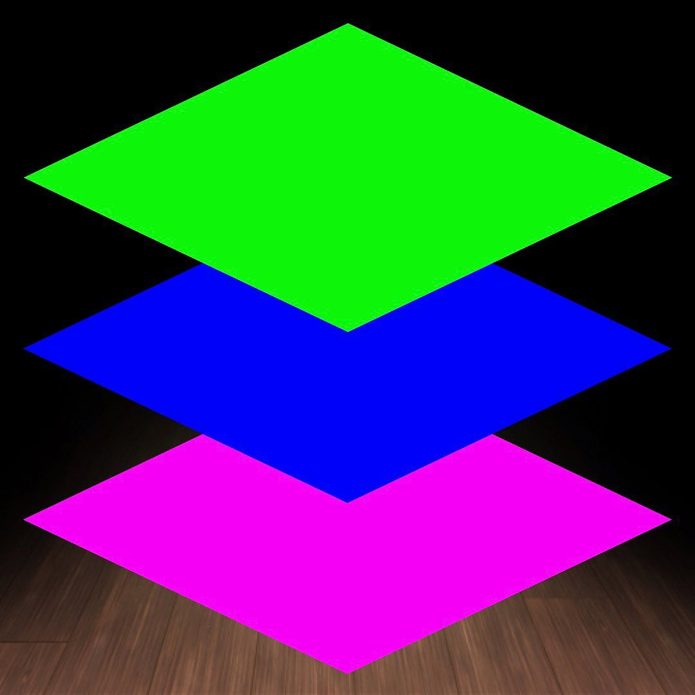

2023년 5월 5일, 어떤질서에게 보내는 편지
어떤질서 여러분 안녕하세요. 재연입니다. 잘 지내고 계신가요? 저는 이제 입대한지 86일차가 되어가네요. 아직도 500일 넘게 남았다는게 막막하긴 하지만 그래도 잘 적응하고 지내고 있답니다. 가끔 상관 분들의 무리한 디자인 제작 요구에 힘들어하긴 하지만 그래도 육체적인 훈련이 없어서 다칠 일이 없다는게 정말 좋은 것 같아요.
지난 시간동안 다들 어떻게 지내셨나요? 매달 한번씩은 만나서 소식을 전해듣곤 했는데 참여하지 못하니 소식을 모르네요. 다들 멋지게 잘 지내고 계실 것 같아요. 나중에 소식 전해들을 수 있으면 좋겠네요. 축하할 일이 있다면 같이 축하할게요.
제가 오늘 이렇게 웹사이트를 남기는 별다른 이유는 딱히 없어요. 입대 전부터 생각했던 바로는 떠난 자는 조용한 것이 미덕이라 생각해서 어떤질서 톡방에도 최대한 조용히 지내고 제가 개입을 안하려고 했었는데 잔존하던 투표들이 투표취소를 알렸었죠... 많이 응원해주셨는데 말 없이 지내는게 서운하게 와닿았을 수도 있었을 것 같아요. 미안한 마음으로 제 소식도 알릴 겸 몇가지 하고싶은 말이 생긴 것 같아서 오늘은 이렇게 참여해보려고 합니다.
어떤 말을 하고 싶은지, 무슨 말을 하는게 좋을지 고민하다 아래와 같이 잡아봤어요.
AI 기술과 코딩의 미래
제가 오늘 이렇게 웹사이트를 남기는 별다른 이유는 딱히 없어요. 입대 전부터 생각했던 바로는 떠난 자는 조용한 것이 미덕이라 생각해서 어떤질서 톡방에도 최대한 조용히 지내고 제가 개입을 안하려고 했었는데 잔존하던 투표들이 투표취소를 알렸었죠... 많이 응원해주셨는데 말 없이 지내는게 서운하게 와닿았을 수도 있었을 것 같아요. 미안한 마음으로 제 소식도 알릴 겸 몇가지 하고싶은 말이 생긴 것 같아서 오늘은 이렇게 참여해보려고 합니다.
제가 오늘 이렇게 웹사이트를 남기는 별다른 이유는 딱히 없어요. 입대 전부터 생각했던 바로는 떠난 자는 조용한 것이 미덕이라 생각해서 어떤질서 톡방에도 최대한 조용히 지내고 제가 개입을 안하려고 했었는데 잔존하던 투표들이 투표취소를 알렸었죠... 많이 응원해주셨는데 말 없이 지내는게 서운하게 와닿았을 수도 있었을 것 같아요. 미안한 마음으로 제 소식도 알릴 겸 몇가지 하고싶은 말이 생긴 것 같아서 오늘은 이렇게 참여해보려고 합니다.
어떤 말을 하고 싶은지, 무슨 말을 하는게 좋을지 고민하다 아래와 같이 잡아봤어요.